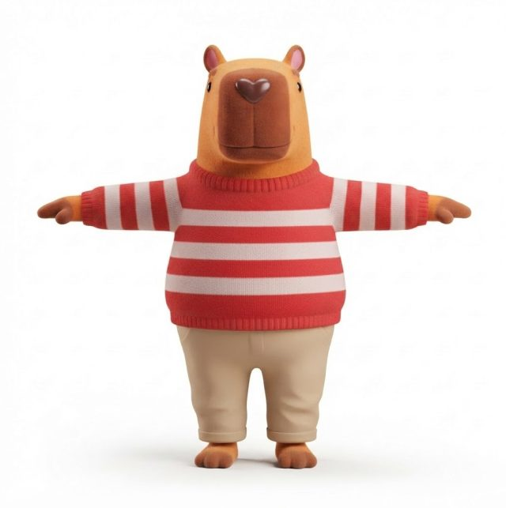
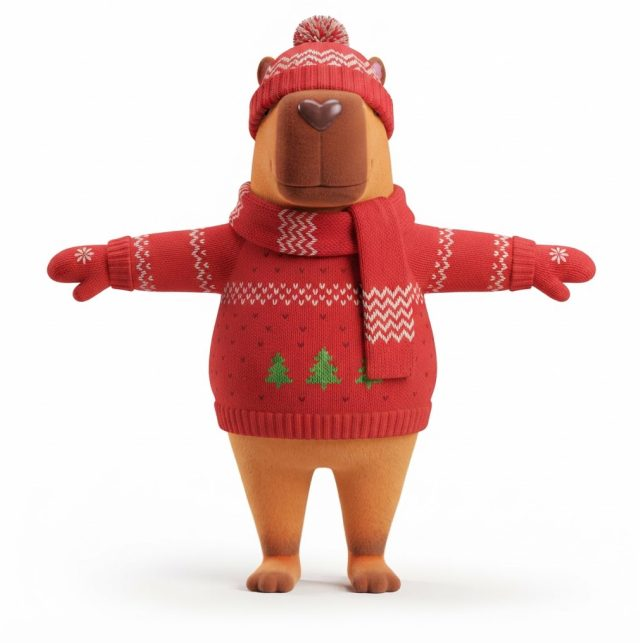
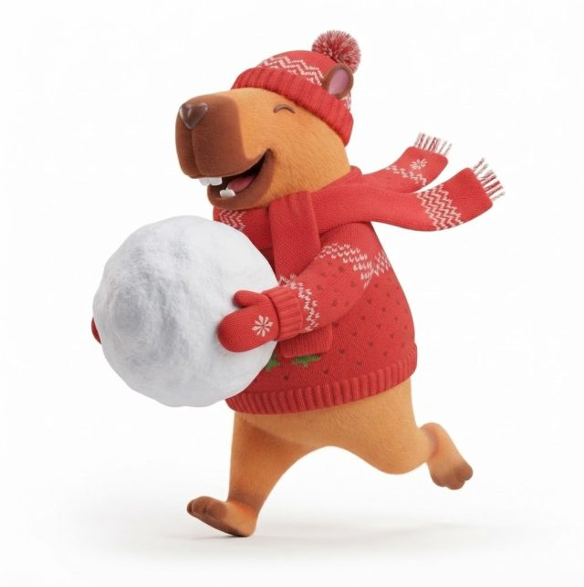
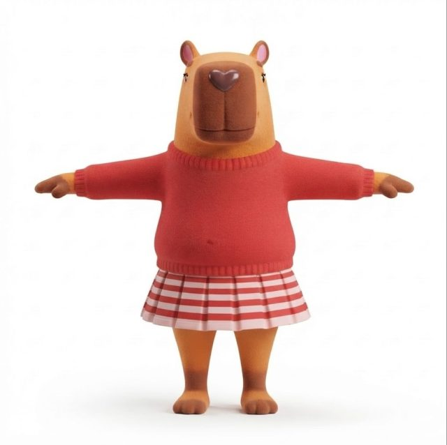
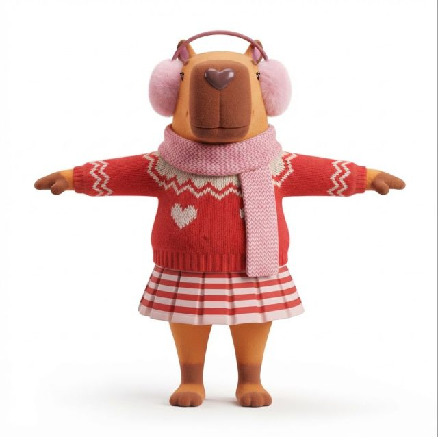
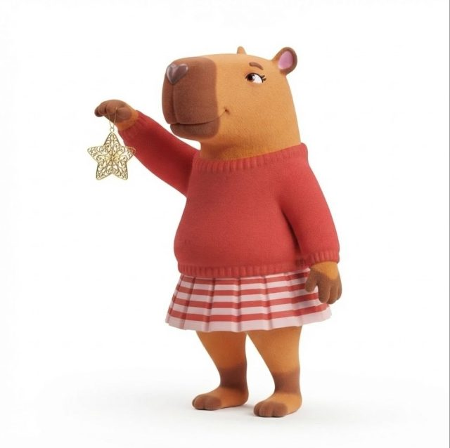
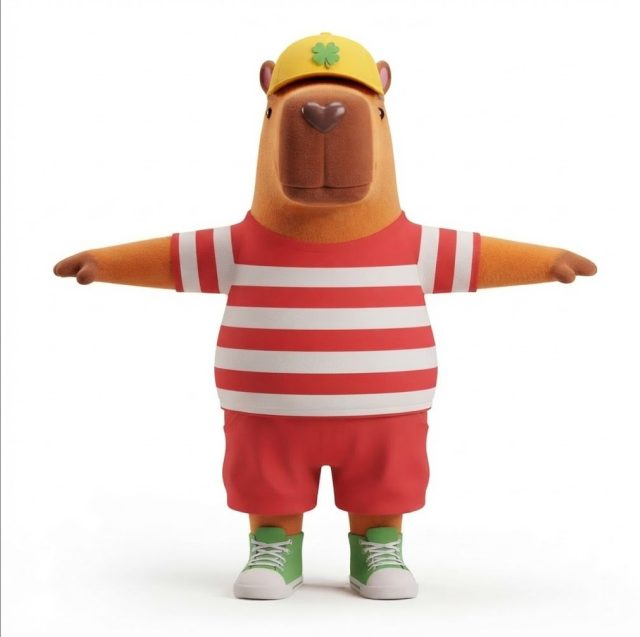
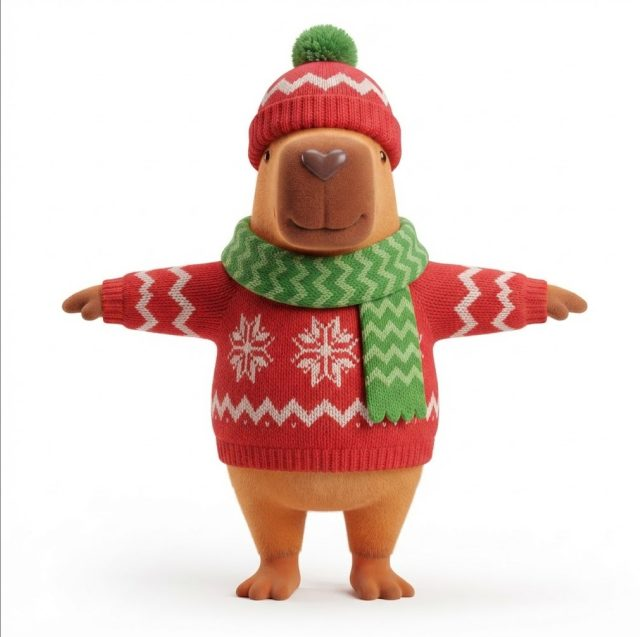
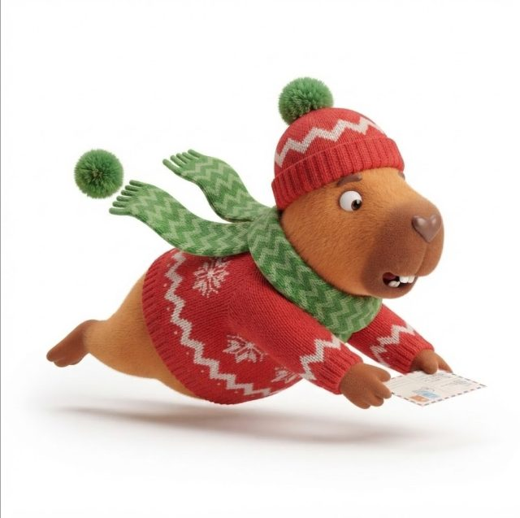

Любой новый кадр собирается в три шага от эталона персонажа. Так морда, пропорции и характер не меняются, даже когда меняются одежда и поза.
Базовая T-поза персонажа из развёртки. Это единственный источник внешности.
Эталон и промпт смены одежды дают новый эталон в той же T-позе.
Новый эталон и промпт позы дают готовый кадр для макета.
Слева базовый эталон, в центре он же в зимней одежде, справа готовая поза.

1 · эталон
2 · комплект
3 · поза
1 · эталон
2 · комплект
3 · поза
1 · эталон
2 · комплект
3 · позаРакурсы те же, что в основном справочнике: позы из 2D-иллюстраций в 3/4 с поворотом 45° вправо и камерой на уровне груди, позы лёжа с камерой чуть сверху.
Сезонный эталон. Приложите исходный эталон персонажа в T-позе из развёртки и промпт сезонного эталона. Получится персонаж в новом костюме.
Позы. Приложите сезонный эталон из шага 1 и промпт позы.
Негативный промпт. Добавьте общий негативный промпт из основного справочника и дополнения из таблицы своего сезона.
Проверка. Проверьте кадр по чек-листу основного справочника. Дополнительно убедитесь, что сезонный костюм не потерялся и не смешался с базовой одеждой.
Одежда. Сезонные костюмы противоречат правилу «Do not change clothing», поэтому эталоны прямо заменяют наряд. В позах правило снова действует, но уже для сезонного костюма.
Сын без кепки. В обоих сезонных костюмах сын без жёлтой кепки с клевером. Его узнают по росту, а зимой ещё и по зелёному шарфу.
Дополнение для сына. В основном справочнике в дополнении для сына стоят sweater и barefoot, а в сезонных костюмах сын как раз в свитере и босиком. Поэтому для сезонных кадров дополнение заменено целиком (см. таблицы негативных промптов).
Цвета вне палитры. Розового цвета (наушники и шарф мамы) в палитре нет, поэтому HEX для него не указан. Для соломенной шляпы мамы взят бежевый #D9AE88 из палитры.
Румянец. Розовые щёки с летней иллюстрации не перенесены: в описании стиля их нет. Если они нужны, добавьте в эталон строку soft pink blush on the cheeks.
Сначала сезонный эталон в T-позе от базового эталона персонажа, затем позы от сезонного эталона.
Use the attached image as a strict character reference: capybara dad. Keep exactly the same face, head shape, boxy muzzle, heart-shaped nose, bead eyes, fur color, body proportions and 3D style. Replace only the outfit with the winter outfit described below. Winter outfit: - Red knitted Christmas sweater (#E0262F) with a ribbed rolled collar, ribbed cuffs and a ribbed hem covering the hips. A band of small off-white chevron knit pattern (#F3E4E4) across the chest and on the sleeves, a few small green knitted fir-tree motifs (#4CB848) on the belly, scattered tiny darker red chevron stitches, soft visible knit texture. - Red knitted beanie (#E0262F) with off-white chevron bands (#F3E4E4), a wide ribbed cuff and a fluffy red and off-white pompom, sitting on top of the head over the ears. - Long red knitted scarf (#E0262F) with off-white chevron pattern (#F3E4E4), wrapped once around the neck, one end hanging down the chest. - Red knitted mittens (#E0262F) with ribbed cuffs and a small off-white eight-petal snowflake motif on the back. - No trousers: bare legs below the sweater, slightly darker orange-brown feet, barefoot. Expression: calm, kind closed-mouth half-smile, no teeth visible. Style: soft toy-like look of modern family 3D animation, short velvety plush-like fur, rounded shapes, smooth matte materials, subtle subsurface scattering on nose. Pose and framing: T-pose, standing straight and symmetrical, facing the viewer directly, arms extended horizontally to the sides, legs slightly apart. Straight-on front view, full body including the whole beanie, centered composition. Background: plain pure white background, soft even studio lighting, soft contact shadow under the feet. High detail, character model sheet quality.
Use the attached image as a strict character reference: capybara dad. Keep exactly the same face, head shape, boxy muzzle, heart-shaped nose, bead eyes, ears, fur color, body proportions and 3D style. Replace only the outfit with the winter outfit described below. Winter outfit: - Red knitted Christmas sweater (#E0262F) with a ribbed rolled collar, ribbed cuffs and a ribbed hem covering the hips. A band of small off-white chevron knit pattern (#F3E4E4) across the chest and on the sleeves, a few small green knitted fir-tree motifs (#4CB848) on the belly, scattered tiny darker red chevron stitches, soft visible knit texture. - No hat, no scarf, no mittens. - No trousers: bare legs below the sweater, slightly darker orange-brown feet, barefoot. Expression: calm, kind closed-mouth half-smile, no teeth visible. Style: soft toy-like look of modern family 3D animation, short velvety plush-like fur, rounded shapes, smooth matte materials, subtle subsurface scattering on ears and nose. Pose and framing: T-pose, standing straight and symmetrical, facing the viewer directly, arms extended horizontally to the sides, legs slightly apart. Straight-on front view, full body, centered composition. Background: plain pure white background, soft even studio lighting, soft contact shadow under the feet. High detail, character model sheet quality.
Use the attached image as a strict character reference: capybara son. Keep exactly the same face, head shape, boxy muzzle, heart-shaped nose, bead eyes, fur color, body proportions and 3D style. Replace only the outfit with the winter outfit described below. He does not wear his baseball cap, T-shirt, shorts or sneakers in this outfit. Winter outfit: - Red knitted Christmas sweater (#E0262F) with ribbed collar, cuffs and hem, large off-white snowflake motifs (#F3E4E4) knitted on the body, off-white chevron bands on the sleeves, soft visible knit texture. - Red knitted beanie (#E0262F) with off-white chevron bands (#F3E4E4), a wide ribbed cuff and a fluffy green pompom (#4CB848), sitting straight on top of the head over the ears. - Green knitted scarf (#4CB848) with a lighter green chevron pattern and scalloped ends, wrapped around the neck, both ends hanging loosely. - Bare legs below the sweater, slightly darker orange-brown feet, barefoot. Expression: cheerful, curious closed-mouth smile, no teeth visible. Style: soft toy-like look of modern family 3D animation, short velvety plush-like fur, rounded shapes, smooth matte materials, subtle subsurface scattering on nose. Pose and framing: T-pose, standing straight and symmetrical, facing the viewer directly, arms extended horizontally to the sides, legs slightly apart. Straight-on front view, full body including the whole beanie, centered composition. Background: plain pure white background, soft even studio lighting, soft contact shadow under the feet. High detail, character model sheet quality.
Use the attached image as a strict character reference: capybara mom. Keep exactly the same face, head shape, boxy muzzle, heart-shaped nose, bead eyes with one small eyelash flick, fur color, body proportions, the same striped pleated skirt and 3D style. Replace only the sweater and add the winter accessories described below. Winter outfit: - Red knitted Christmas sweater (#E0262F) ending at the hips, ribbed collar and cuffs, wide ribbed hem. An off-white chevron knit band (#F3E4E4) across the upper chest, two off-white chevron-knit heart motifs on the chest, off-white chevron bands on the sleeves, soft visible knit texture. - The same short pleated A-line skirt with horizontal red (#E0262F) and off-white (#F3E4E4) stripes and a thin light pink trim at the hem, ending above the knees. - Fluffy soft pastel pink earmuffs with a thin darker pink headband over the top of the head, covering the ears. - Long soft pink knitted scarf with a small darker pink chevron pattern, wrapped around the neck, one long end hanging down the front. - Bare slender legs, slightly darker orange-brown feet, barefoot. Expression: warm, kind closed-mouth smile, no teeth visible. Style: soft toy-like look of modern family 3D animation, short velvety plush-like fur, rounded shapes, smooth matte materials, subtle subsurface scattering on nose. Pose and framing: T-pose, standing straight and symmetrical, facing the viewer directly, arms extended horizontally to the sides, legs slightly apart. Straight-on front view, full body including the earmuffs, centered composition. Background: plain pure white background, soft even studio lighting, soft contact shadow under the feet. High detail, character model sheet quality.
Use the attached image as a strict character reference: capybara dad in winter outfit. Keep exactly the same face, head shape, proportions, fur, outfit, beanie, scarf, mittens, colors and 3D style. Do not change or add clothing. Pose: running forward joyfully, carrying a big round snowball almost as large as his torso in both mittens against his chest, one leg kicked back and bent at the knee, body leaning forward, scarf end and pompom swinging with the motion. Expression: happy laugh, open-mouth smile with two small white front teeth visible. Camera: three-quarter view, body turned 45 degrees to the right of the frame, camera at chest height, full body including the whole snowball, centered. Background: plain pure white background, soft even studio lighting, soft contact shadow under the feet. High detail.
Use the attached image as a strict character reference: capybara dad in winter sweater. Keep exactly the same face, head shape, proportions, fur, outfit, colors and 3D style. Do not change or add clothing. Pose: standing on slightly bent legs, one arm raised forward at head height holding a golden openwork Christmas ornament by its loop as if hanging it on a branch, the other arm relaxed, head lifted, looking up at the ornament with interest. Expression: calm, content closed-mouth half-smile, no teeth visible. Camera: three-quarter view, body turned 45 degrees to the right of the frame, camera at chest height, full body, centered. Background: plain pure white background, no tree, soft even studio lighting, soft contact shadow under the feet. High detail.
Use the attached image as a strict character reference: capybara son in winter outfit. Keep exactly the same face, head shape, proportions, fur, outfit, beanie, scarf, colors and 3D style. Do not change or add clothing. Pose: sliding forward on his belly, body stretched out low and horizontal, both arms reaching forward, one paw holding a small square postcard, legs stretched straight back, scarf ends and pompom flying back with the speed. Expression: surprised and excited, eyebrows raised, small open mouth with two small white front teeth visible. Camera: three-quarter view, body turned 45 degrees to the right of the frame, camera slightly above looking down at about 30 degrees, full body, centered. Background: plain pure white background, soft even studio lighting, soft contact shadow under the body. High detail.
Use the attached image as a strict character reference: capybara mom in winter outfit. Keep exactly the same face, head shape, proportions, fur, outfit, skirt, earmuffs, scarf, colors and 3D style. Do not change or add clothing. Pose: standing with legs slightly apart, both arms spread wide and raised, holding a string of colorful glossy Christmas light bulbs (red, blue, orange, purple) that hangs in a loose arc in front of her chest, head tilted slightly, one hip shifted in a playful stance. Expression: warm, pleased closed-mouth smile, no teeth visible. Camera: three-quarter view, body turned 45 degrees to the right of the frame, camera at chest height, full body including the whole garland, centered. Background: plain pure white background, soft even studio lighting, soft contact shadow under the feet. High detail.
| Кадр | Дополнение |
|---|---|
| Папа | trousers, chinos, striped sweater, Santa hat, gloves with fingers |
| Сын | skateboard, baseball cap, T-shirt, shorts, sneakers, trousers, tilted beanie (вместо дополнения для сына из основного справочника) |
| Мама | long eyelashes, makeup, lipstick, trousers, hat, beanie |
| Эталоны в T-позе | three-quarter view, dynamic pose |
| Кадры с закрытым ртом | visible teeth, buck teeth, open mouth |
Добавляется к общему негативному промпту из основного справочника.
Та же цепочка: базовый эталон, летний эталон в T-позе, затем позы.
Use the attached image as a strict character reference: capybara dad. Keep exactly the same face, head shape, boxy muzzle, heart-shaped nose, bead eyes, ears, fur color, body proportions and 3D style. Replace only the outfit with the summer outfit described below. Summer outfit: - Loose short-sleeve T-shirt with wide horizontal red (#E0262F) and off-white (#F3E4E4) stripes, soft cotton fabric, covering the hips. - Yellow sunglasses (#FFD21F) with rounded rectangular frames and dark green tinted lenses, sitting on the top of the muzzle in front of the eyes. - No trousers: bare legs below the T-shirt, slightly darker orange-brown feet, barefoot. Expression: calm, kind closed-mouth half-smile, no teeth visible. Style: soft toy-like look of modern family 3D animation, short velvety plush-like fur, rounded shapes, smooth matte materials, subtle subsurface scattering on ears and nose. Pose and framing: T-pose, standing straight and symmetrical, facing the viewer directly, arms extended horizontally to the sides, legs slightly apart. Straight-on front view, full body, centered composition. Background: plain pure white background, soft even studio lighting, soft contact shadow under the feet. High detail, character model sheet quality.
Use the attached image as a strict character reference: capybara son. Keep exactly the same face, head shape, boxy muzzle, heart-shaped nose, bead eyes, ears, fur color, body proportions and 3D style. Replace only the outfit with the summer outfit described below. He does not wear his baseball cap, shorts or sneakers in this outfit. Summer outfit: - Loose short-sleeve T-shirt with wide horizontal red (#E0262F) and off-white (#F3E4E4) stripes, soft cotton fabric, covering the hips. - Bare legs below the T-shirt, slightly darker orange-brown feet, barefoot. Expression: cheerful, curious closed-mouth smile, no teeth visible. Style: soft toy-like look of modern family 3D animation, short velvety plush-like fur, rounded shapes, smooth matte materials, subtle subsurface scattering on ears and nose. Pose and framing: T-pose, standing straight and symmetrical, facing the viewer directly, arms extended horizontally to the sides, legs slightly apart. Straight-on front view, full body, centered composition. Background: plain pure white background, soft even studio lighting, soft contact shadow under the feet. High detail, character model sheet quality.
Если кепку с клевером нужно сохранить как опознавательный знак, удалите фразу про кепку из этого промпта и уберите baseball cap из летнего негативного промпта сына.
Use the attached image as a strict character reference: capybara mom. Keep exactly the same face, head shape, boxy muzzle, heart-shaped nose, bead eyes with one small eyelash flick, ears, fur color, body proportions and 3D style. Replace only the outfit with the summer outfit described below. Summer outfit: - Sleeveless summer sundress: fitted bodice with wide horizontal red (#E0262F) and off-white (#F3E4E4) stripes, a light flowing flared skirt in red (#E0262F) with wide off-white stripes (#F3E4E4) near the hem, ending just below the knees, soft airy fabric with gentle folds. - Straw boater hat in natural straw color (#D9AE88) with a flat crown, a wide flat brim and a red band (#E0262F), sitting on top of the head between the ears. - Bare slender legs below the dress, slightly darker orange-brown feet, barefoot. Expression: warm, kind closed-mouth smile, no teeth visible. Style: soft toy-like look of modern family 3D animation, short velvety plush-like fur, rounded shapes, smooth matte materials, subtle subsurface scattering on ears and nose. Pose and framing: T-pose, standing straight and symmetrical, facing the viewer directly, arms extended horizontally to the sides, legs slightly apart. Straight-on front view, full body including the whole hat, centered composition. Background: plain pure white background, soft even studio lighting, soft contact shadow under the feet. High detail, character model sheet quality.
Use the attached image as a strict character reference: capybara dad in summer outfit. Keep exactly the same face, head shape, proportions, fur, outfit, sunglasses, colors and 3D style. Do not change or add clothing. Pose: standing relaxed with weight on one leg, holding a long stand-up paddle diagonally across his body with both paws, dark brown shaft and yellow blade (#FFD21F) resting near his feet, head slightly raised, looking ahead with a cool, confident attitude. Expression: calm, satisfied closed-mouth half-smile, no teeth visible. Camera: three-quarter view, body turned 45 degrees to the right of the frame, camera at chest height, full body including the whole paddle, centered. Background: plain pure white background, soft even studio lighting, soft contact shadow under the feet. High detail.
Use the attached image as a strict character reference: capybara son in summer outfit. Keep exactly the same face, head shape, proportions, fur, outfit, colors and 3D style. Do not change or add clothing. Pose: standing on slightly bent legs, one paw raised to his chin in a thoughtful gesture, the other arm bent behind his back, head turned and slightly lifted, looking into the distance as if searching for something. Expression: curious, puzzled closed-mouth smile, no teeth visible. Camera: three-quarter view, body turned 45 degrees to the right of the frame, camera at chest height, full body, centered. Background: plain pure white background, soft even studio lighting, soft contact shadow under the feet. High detail.
Use the attached image as a strict character reference: capybara son in summer outfit. Keep exactly the same face, head shape, proportions, fur, outfit, colors and 3D style. Do not change or add clothing. Prop: inflatable swim ring worn around his waist over the striped T-shirt, glossy smooth vinyl, red (#E0262F) with four evenly spaced wide off-white segments (#F3E4E4) in a classic lifebuoy pattern, soft rounded tube, sized snugly for a small kid. Pose: standing with legs slightly apart, both arms resting forward on top of the swim ring, paws hanging relaxed over its front edge, head slightly lifted and turned toward the viewer, ready to go swimming. Expression: cheerful, curious closed-mouth smile, no teeth visible. Camera: three-quarter view, body turned 45 degrees to the right of the frame, camera at chest height, full body including the whole swim ring, centered. Background: plain pure white background, soft even studio lighting, soft contact shadow under the feet. High detail.
Круг можно добавить в любую позу сына: вставьте строку Prop в промпт позы, а в строке Camera допишите including the whole swim ring.
Use the attached image as a strict character reference: capybara mom in summer outfit. Keep exactly the same face, head shape, proportions, fur, outfit, straw hat, colors and 3D style. Do not change or add clothing. Pose: sitting on the ground and leaning back on one arm, legs stretched forward and crossed at the ankles, dress gently spread around her, the other paw raised holding a clear glass of water with ice cubes, head tilted back in relaxed enjoyment. Expression: blissful, eyes closed in happy arcs, gentle closed-mouth smile, no teeth visible. Camera: three-quarter view, body turned 45 degrees to the right of the frame, camera at chest height of the seated character, full body including the whole hat, centered. Background: plain pure white background, soft even studio lighting, soft contact shadow under the body. High detail.
| Кадр | Дополнение |
|---|---|
| Папа | trousers, chinos, shorts, sweater, hat, black sunglasses |
| Сын | skateboard, baseball cap, shorts, sneakers, sweater, trousers, sunglasses (вместо дополнения для сына из основного справочника) |
| Сын в плавательном круге | дополнение для сына и water, pool, beach, rope on swim ring, inflatable animal ring, deflated ring |
| Мама | long eyelashes, makeup, lipstick, trousers, sweater, swimsuit, sun hat with floppy brim |
| Эталоны в T-позе | three-quarter view, dynamic pose |
| Все летние позы (рот закрыт) | visible teeth, buck teeth, open mouth |
Добавляется к общему негативному промпту из основного справочника.
Цепочка эталонов. Сначала исходный эталон, потом сезонный, потом позы. Сезонный эталон тоже проверяйте по чек-листу основного справочника.
Midjourney. Добавляйте --cref <ссылка на сезонный эталон> --cw 100.
Надписи. Реплики и надписи с иллюстраций не генерируйте. Добавляйте их поверх картинки в редакторе.
Внешность всегда берётся из базового эталона
Поза генерируется от эталона нужного комплекта
Комплект целиком сохраняется в каждой позе
Морда-кирпичик, нос-сердечко и рост семьи неизменны
Палитра: красный и белый, акценты жёлтый и зелёный
Готовые эталоны комплектов складываются в Figma рядом с базовой развёрткой и переиспользуются для всех новых поз.